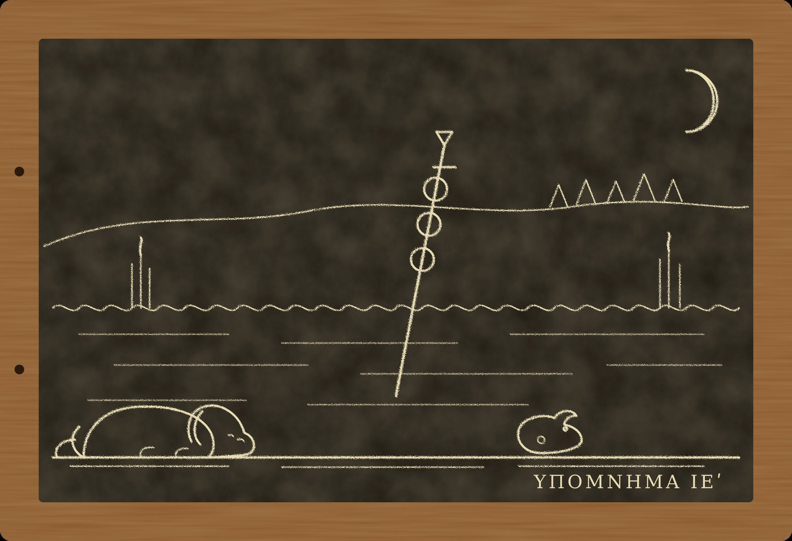

Гипомнема XV Абритт

I
Письмо из лагеря пришло в коллегию в середине апреля двести пятьдесят первого года. Август Деций требовал к войску двух стражей слов, чтобы привести легионы к новой присяге и хранить её. Прежняя присяга после зимы стала ненадёжной. Наместник Фракии Приск, как говорили, сдал готам Филиппополь, договорился с их царём Книвой и назвался Августом. Часть солдат из фракийских гарнизонов ушла к нему. Тем, кто остался, Август хотел дать присягу, в которой не было бы ни одной щели.
Стражей письмо называло по именам: Марк Аврелий Мнесарх и Никанор. Под письмом стояла печать канцелярии, а в самом письме не повторялось ни одно слово.
— Он хочет, чтобы ты был там, — сказал Никанор, когда мы вышли из базилики.
— Он хочет знать, что бывает с теми, кто верит наполовину, — ответил я. — Он сам так сказал. Может быть, думает, что на войне это видно лучше.
Мы выехали через десять дней, с обозом новобранцев из Италии, по Фламиниевой дороге на север, потом через Аквилею и Юлийские Альпы и дальше вниз по Дунаю. Дорога заняла месяц. Ферокса я хотел оставить у Досифея, но пёс лёг поперёк порога и не дал себя увести. Он не лаял и не скулил, он просто лежал, и было ясно, что поднять его можно только вместе с порогом. В конце концов я посадил его в телегу к новобранцам, и всю дорогу он ехал на мешках с зерном, как старый сенатор на носилках, и смотрел на Италию с выражением человека, которому её показывают в последний раз. Пами поехал в корзине. Он сказал, что не любит дорог, людей и телег, но меня одного с собакой не отпустит, потому что мы оба пропадём.
В Мёзии весна была позже, чем в Риме. Дороги ещё стояли в грязи, ручьи были полны, и по ночам с болот поднимался туман, такой густой, что часовые перекликались, не видя друг друга. Войско стояло под Абриттом, небольшим городом на холмах, в нескольких днях пути к югу от Дуная. Готы с добычей и пленными из Фракии отходили на север, к реке, и Август собирался их догнать, прежде чем они переправятся.
II
Деций принял нас в своём шатре на другой день после приезда. Ему было около шестидесяти. Он постарел за три года больше, чем стареют за десять: голова стала совсем седой, а взгляд тяжелее. Рядом с ним сидел его старший сын, Геренний, которого в мае провозгласили Августом. Он был совсем молод, с отцовскими бровями, и держался так прямо, как держатся люди, которым недавно сказали, что на них смотрит весь мир.
У входа в шатёр стоял наместник Верхней Мёзии Требониан Галл, крупный италиец с осторожным лицом. Он смотрел на нас так, как смотрят на погоду, которую нельзя изменить, но о которой полезно знать заранее.
Евмен сидел в углу шатра, за столом с табличками, и, когда мы вошли, не поднял головы. Он поднял её только тогда, когда Август назвал моё имя.
Присягу назначили на следующее утро. Формулу составил Евмен, и я, прочтя её, не нашёл в ней ни одной щели: «Я человек Императоров Цезарей Гая Мессия Квинта Траяна Деция Августа и Квинта Геренния Этруска Мессия Деция Августа. Их враги мои враги. Я не служил и не служу Приску. Клянусь в этом перед знамёнами». Каждое слово стояло на своём месте, и сдвинуть его было некуда.
Утром легионы присягали, когорта за когортой, перед святилищем знамён, которое в походе ставят посреди лагеря, при жреце и при нас с Никанором. Шло это до полудня. Голос садился у немногих, и этих немногих трибуны отводили в сторону. Ферокс лежал позади меня, под повозкой, и смотрел на солдат, как смотрит на водоносов: каждый для него был лучшим человеком в Мёзии. Пами сидел на повозке и смотрел на Ферокса так, как смотрят на родственника, за которого стыдно.
Вечером, когда мы с Никанором повторили всё хранимое за день, я понял, что за весь день Евмен не сказал мне ни слова. Он стоял у святилища, рядом с Августом, сложив руки перед собой, и слушал присягу так же, как слушал её я. Иногда мне казалось, что он слушает не солдат, а меня.
III
Через восемь дней передовые отряды столкнулись с готами у переправы через ручей, в полудне пути к северу от лагеря. Готы оставили на берегу заслон из лучников, чтобы задержать погоню. Геренний повёл конницу сам. Говорили, что он слишком смело полез вперёд. Стрела попала ему в шею. Тело вынести не смогли: готы удержали переправу до темноты.
Я видел, как Август вышел навстречу вернувшейся коннице и как ему сказали. Он долго стоял молча. Потом выпрямился и сказал что-то трибунам. Что именно, я не слышал. К вечеру по лагерю ходило, что Август сказал: смерть одного солдата для войска невеликая потеря. Одни повторяли это с восхищением, другие со страхом. Я не знаю, сказал ли он это. Никто из тех, кто повторял, не стоял рядом с ним.
Но у этой смерти было и другое следствие, о котором в тот вечер в лагере думали только трое: я, Никанор и Евмен.
Присяга верности живому человеку теряет силу с его смертью. Так было всегда, и на этом правиле держится всё, что случилось с Римом за последние пятнадцать лет. Восемь дней назад легионы присягнули двум Августам, и одного из них не стало. Половина присяги умерла вместе с ним. Вторая половина, может быть, держалась, а может быть, нет: никто никогда не клялся двоим так, чтобы потом умирал один. Если присяга одна, а людей в ней двое, то жива ли она наполовину, или умерла вся?
Евмен пришёл к нам ночью, когда лагерь затих. Он сел у входа в нашу палатку, положил руки на колени и сказал:
— Нужна новая. До битвы.
— Ты уже написал, — сказал я.
— Написал. Хочу, чтобы ты прочёл.
Я прочёл при свете лампы. Новая формула была такой же, как прежняя, только в ней было одно имя. Щелей в ней не было.
— Хорошая, — сказал я.
— Знаю, — сказал Евмен. — Я хотел, чтобы ты это сказал.
Он ушёл. Никанор долго смотрел ему вслед.
— Учитель, — сказал он наконец, — по-моему, он к тебе приходит за тем же, за чем ты ходил к Аполлонию.
IV
Новую присягу легионы дали на следующее утро. В тот же день в лагерь привели проводника.
Его звали Битус. Он был мёзиец, свободный, из деревни в долине за ручьём, лет сорока, с обветренным лицом и руками пастуха. Римские разведчики нашли его в пустой деревне: готы угнали всех, а он, по его словам, прятался в лесу. Деций хотел ударить по готам, пока те не ушли за Дунай, а самая короткая дорога к их лагерю шла через широкий луг за ручьём. Если луг держит, конница пройдёт его за час. Если не держит, придётся обходить холмами, и готы успеют уйти.
Битус знал этот луг. Август приказал ему поклясться.
Клятву составляли при мне. Евмена в этот раз не позвали: Деций считал, что для пастуха хватит и трибуна. Трибун сначала хотел, чтобы Битус поклялся, что луг твёрдый. Жрец остановил его. Клясться можно только в том, что знаешь. Пастух не был на лугу с тех пор, как пришли готы. Он не может знать, каков луг сегодня. Он знает только, каким луг был, когда он видел его в последний раз.
Формулу переделали. Битус встал перед жертвенником, при жреце, при мне и при Никаноре, и сказал:
— Прошлой осенью я гонял по этому лугу овец от ручья до леса. Земля держала. Клянусь в этом.
Голос у него не сел. Это была правда.
Трибун ушёл к Августу докладывать. Я слышал, как он сказал у шатра: «Пастух поклялся, что луг держит».
Я стоял у жертвенника и смотрел, как Битус уходит к повозкам, где ему дали место. Он шёл, сутулясь, и правую руку держал у груди, под туникой, как держат то, что боятся потерять.
V
Ночью Ферокс не спал. Он лежал у входа в палатку, подняв голову, и слушал. Слух у него в последний год стал совсем плохим, но в ту ночь ветер дул с севера, от ручья, и Ферокс, видимо, что-то слышал или чуял.
— Там лягушки, — сказал он мне, когда я вышел к нему. — Много. Там, где луг.
— На лугу бывают лягушки.
— Не столько, — сказал Ферокс. — Столько бывает там, где вода. Я помню, у реки, в Риме, когда она разливается. Так же.
Утром я пошёл к повозкам, где спал Битус. Он сидел на земле у колеса и чинил ремень сандалии. Сандалии у него были в свежем иле, серо-зелёном, какой бывает на дне стоячей воды, а не на дороге. Я спросил его, откуда ил. Он сказал, что вчера ходил к ручью за водой.
— К ручью ведёт сухая тропа, — сказал я. — Я ходил по ней вчера.
Он ничего не ответил и стал чинить ремень дальше.
Пами в это время сидел на повозке над ним. Он слез оттуда, когда я отошёл, догнал меня и пошёл рядом.
— У него за пазухой свистулька, — сказал кот. — Глиняная, в виде птицы. Детская. Он её трогает, когда думает, что на него не смотрят. Вчера перед клятвой тоже трогал. Пахнет ребёнком, мальчиком. Недавно, дней десять назад.
— В деревне было много детей.
— Готы угнали всю деревню, — сказал Пами. — А он остался. Ты сам слышал, как он сказал, что прятался в лесу. Люди, которые прячутся в лесу, пахнут лесом. А он пахнет готским костром. Дым у них другой, они жгут другое дерево. Я нюхал их стрелы, которые принесли с переправы.
Я остановился посреди дороги, и мимо меня прошли трое легионеров с вёдрами, ругаясь, что я стою на дороге.
Картина сложилась у меня не сразу. У Битуса был сын. Сына угнали готы вместе с деревней. Битуса отпустили и послали к римлянам. Ему не велели лгать: готы откуда-то знали, что ложь у римлян видна по голосу и что солгавшего ждут до луны. Ему велели сказать только правду, только то, что он знает, а знал он, каким был луг прошлой осенью. А за эти десять дней готы запрудили ручей ниже по течению, и луг ушёл под воду. Не глубоко, по колено, по брюхо коню, так, чтобы сверху, с холма, он казался зелёным и ровным.
Кто научил их этому, я не знаю. Может быть, кто-то из людей Приска, сдавших Филиппополь. Может быть, пленные римляне, которых готы гнали на север с прошлого лета. А может быть, никто не учил, и готы просто сообразили сами, как сообразил бы любой, кто год простоял лагерем рядом с римским войском и слышал, как оно клянётся.
VI
Я пошёл к шатру Августа. Никанор пошёл со мной. Нас пропустили, потому что мы были стражами присяги, а утром Август собирался вести войско в бой.
В шатре шёл совет. Деций сидел над картой, нарисованной углём на доске. Вокруг стояли легаты, трибуны и Галл. Евмен сидел в углу за своим столом.
Я сказал Августу, что клятва пастуха говорит о прошлой осени, а не о сегодняшнем дне. Что по ночам на лугу кричат лягушки. Что у пастуха на сандалиях ил стоячей воды. Что у него, скорее всего, есть сын в руках у готов. Я попросил послать на луг разведчиков, пешком, до рассвета, прежде чем вести туда конницу.
Деций выслушал меня, не перебивая. Потом сказал:
— Пастух поклялся.
— Он поклялся в правде, Август. Прошлой осенью луг был сухим.
— Если луг не держит, — сказал Деций, — пастух умрёт до луны. Мы узнаем.
— Мы узнаем после битвы.
— Значит, после битвы, — сказал Деций. — Хранитель, ты говоришь мне о лягушках. Твой пёс слышал лягушек. Мой сын лежит на том берегу со стрелой в шее. Готы уходят. Если я пошлю разведчиков и стану ждать, они уйдут за реку, и мой сын погибнет напрасно.
Я не нашёлся, что ответить. Я помнил, что двадцать пять лет назад сам поклялся так, как велела моя память, и что учителя казнили на девятый день, потому что слову стража не нужна луна. Деций сейчас делал то же самое. Он верил клятве больше, чем лягушкам, потому что этому учили весь Рим, меня в том числе.
Тогда заговорил Евмен. Он не встал из-за стола и не повысил голоса.
— Хранитель прав, Август.
Это было всё. Он сказал это один раз и больше не повторил. В шатре стало тихо. Деций посмотрел на него так, как смотрят на чашу, которая вдруг заговорила.
— Ты составил мне присягу, — сказал Август. — Составлять войну я тебя не просил.
Галл всё это время молчал. Он стоял у входа и смотрел на карту, на уголь, на луг между ручьём и лесом. Я не знаю, о чём он думал. Потом говорили, что он знал о болоте и промолчал нарочно. Я этого не знаю. Я видел только, что он молчал, и что лицо у него было такое же осторожное, как в первый день.
VII
Евмен пришёл ко мне в ту же ночь, последнюю перед битвой. Никанор спал. Ферокс лежал у входа. Тянуть Евмена за плащ он не стал: палатка не дом, и гостей в неё, по его понятиям, не зовут. Он только поднял голову и снова положил её на лапы.
Евмен сел на землю напротив меня. Лампа между нами коптила: масло в лагере было дешёвое.
— Ты хотел меня спросить, — сказал он.
— Хотел, — сказал я. — Что ты ей ответил?
Он долго молчал. Потом сказал, тем же ровным голосом, каким говорил всё:
— Она спросила: кто прав, ты или Аполлоний. Я ответил: Аполлоний. Она засмеялась. Сказала, что в доме честная одна она. И ушла. Через три дня её не стало.
— Ты знал, что после этого ответа она будет считать.
— Знал, — сказал Евмен. — Я знал, что она будет считать, и что она знает, что солгала, и что она верит. Я мог сказать ей другое. Я мог сказать: прав я, боги карают неправду как таковую, а твой муж жив случайно, и ты, может быть, тоже уцелеешь случайно. Это было бы ложью, но не под клятвой. Я не сказал. Я никогда не лгу, когда меня спрашивают. Это единственное, чем я отличаюсь от людей, которых ты ловишь.
Он посмотрел на лампу.
— Двадцать четыре года я не знаю, что её убило. Мой ответ или лихорадка. Если мой ответ, значит, Аполлоний был прав, и я убил её правдой. Если лихорадка, значит, боги здесь ни при чём, и всё, что я делал с тех пор, держалось на пустом месте. Я считал ночи Диодора. Я считал сорок шесть живых в прошлом году. Я ждал, умрёшь ли ты. Я всё это время хотел узнать одно: что бывает с тем, кто верит. И ни разу не узнал наверное.
— Я тоже не знаю, — сказал я.
— Я знаю, что ты не знаешь, — сказал Евмен. — Поэтому я и пришёл. Ты единственный, кто не знает ровно того же, чего не знаю я.
Мы сидели молча, пока лампа не погасла. Я не простил его. Я не уверен, что он просил прощения. Но в ту ночь, впервые за двадцать пять лет, между нами не было ничего, кроме одной женщины, которую мы оба помнили по-разному и одинаково не могли спросить.
Перед тем как уйти, он сказал:
— Завтра я буду на холме, с канцелярией. Встань рядом.
— Зачем?
— Чтобы кто-нибудь видел, как это было, — сказал Евмен. — Ты же пишешь.
VIII
Утро было ясное, без тумана. Войско вышло из лагеря на рассвете и построилось на склоне над ручьём. Я стоял на холме, позади, среди писцов, рабов и канцелярии. Евмен стоял рядом. Никанор был с другой стороны. Ферокса я привязал у повозок, и он выл, пока мы не ушли так далеко, что я перестал его слышать. Пами остался в палатке.
Сверху луг за ручьём был зелёный и ровный, как скатерть. Готов было видно у дальнего леса: они стояли тремя отрядами, и первый, ближний, был невелик.
Войско пошло вперёд. Первый отряд готов не выдержал удара и побежал. Легионы перешли ручей и погнались за ним по лугу. Конница шла впереди.
Я увидел, как первые всадники вдруг осели, будто лошади разом опустились на колени. Потом осели следующие. Потом весь передний строй встал, как встаёт телега, у которой колёса ушли в грязь. Луг под ними был не лугом, а водой, прикрытой травой. Пехота, бежавшая следом, наткнулась на конницу и тоже встала. Задние напирали на передних. А из леса, с обеих сторон, вышли два других отряда готов, и на луг пошли стрелы.
Я смотрел на это сверху. Я видел, как люди тонут по пояс в воде, которая сверху казалась травой. Я видел, как они пытаются повернуть назад и не могут, потому что сзади идут свои. Я видел, как падают знаменосцы. Где-то посреди этого был Август. Я не видел его. Никто потом не мог сказать, что видел, как он умер. Его тела не нашли, как не нашли и тела его сына.
Евмен стоял рядом и смотрел. Он ни разу не отвернулся. Руки у него были сложены перед собой.
— Я составил им присягу без единой щели, — сказал он, не глядя на меня. — Ни одна присяга не спасёт человека, который верит клятве больше, чем глазам.
— Ты сам всю жизнь учил Рим этому, — сказал я.
— Да, — сказал Евмен. — Я учил.
К вечеру всё кончилось. Те, кто выбрался из болота, отошли к лагерю. Готы взяли то, что осталось на лугу, и ушли за реку со своей добычей и со своими пленными. Среди пленных был и сын Битуса.
IX
Через два дня то, что осталось от легионов, провозгласило Августом Требониана Галла. Новую присягу составил Евмен. Хранили её я и Никанор. Ни одного слова в ней не повторялось. По договору, который Галл заключил с готами, пленные остались у них.
Битус дожил до луны. Мы с Никанором считали за него, потому что сам он не считал: он сидел у колеса повозки, крутил в пальцах глиняную птицу и ничего не говорил. Он поклялся в правде и выжил. Войско, которое поверило его правде, лежало в болоте. Говорить ему об этом было незачем, он знал и так.
Мы возвращались в Рим с остатками канцелярии в конце лета. Ферокс ехал на мешках. Он ещё больше постарел за эти месяцы и почти всё время спал. Пами сидел в корзине рядом с ним и, когда думал, что я не смотрю, грел ему бок.
Евмен остался при Галле. Перед отъездом он пришёл к нашей повозке, постоял, не говоря ничего, потом кивнул мне. Это был первый раз, когда он мне кивнул.
По дороге, ночами, я думал о последнем вопросе, который остался у меня после всех этих лет. Рассказать ли Риму, за что карают боги, если карают.
Если я расскажу и мне поверят, Рим перестанет считать ночи. Солдат перестанет бояться присяги, меняла вкладчика, отпущенник патрона, сенатор Августа. Евмен говорил мне это девять лет назад на Палатине, и он был прав: через год я не узнал бы этого города. Если я промолчу, Рим будет считать дальше, и будет верить клятве больше, чем глазам, и однажды снова пойдёт по зелёному лугу, который на самом деле вода.
Я не знаю, что хуже. Я видел и то, что держит страх, и то, что этот страх убивает. Я видел Мелитту, которая солгала, поверила и умерла, и Сосикла, который солгал, не поверил и остался жив. Я сам солгал, поверил наполовину и живу. Я не могу поклясться ни в одном ответе, потому что ни одного не знаю.
Поэтому я не стану клясться. Я сделаю то, что всю жизнь считал постыдным. Я запишу всё: все гипомнемы, все дела, лицевую сторону и оборот, Мелитту и Тертуллу, Фебе и Тимона, Евмена и себя. Я отнесу таблички Досифею, в сундук собрания сибурезиев, где, как он говорит, к записи относятся так, как у нас относятся к знамёнам. Пусть лежат. Кто захочет, прочтёт.
В Риме, в первый вечер, я достал табличку «Чужие кары» и на лицевой стороне, под шестнадцатью делами, записал семнадцатое, последнее:
«Деций Август и его войско. Погибли от клятвы, в которой не было ни слова лжи».
На обороте, под восемью строками, я записал девятую:
«Я. Видел. Не смог убедить. Записал».
Пами сидел на столе. Ферокс спал у двери.
— Ты записал, вместо того чтобы поклясться, — сказал кот.
— Да.
— У вас на Аргилете говорят про таких.
— Говорят, — согласился я. — «Записал — значит, не посмел поклясться».
Я положил стиль. Потом снова взял его и приписал внизу, мелко, для себя, хотя таблички теперь предназначались не мне:
«Пусть так».